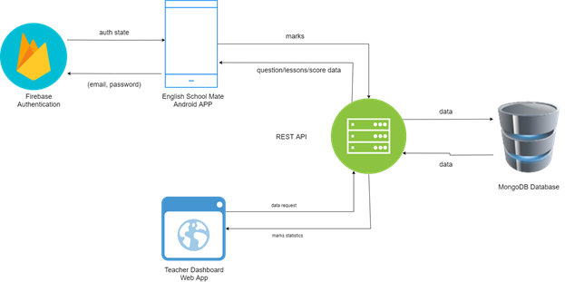

What is English School Mate?
This app for students can help them use their downtime for educational purposes. Instead of surfing the internet or watching TV, students can learn and develop skills themselves, listen to recorded lectures, or complete online homework assignments and game for brain development. teacher can able to see the progress of students and their score,up and down. By giving students the power to control when and where they learn, they can make the most of their learning time very well. in here students will able to face any activity in tie learning for the future.because English ih language is most important one in each and every student. it helps prepare students for the digital future. It teaches 21st-century skills are necessary to be successful in today’s world On the path to personalizing learning, it empowers students by giving them ownership of how they learn, making education relevant to their digital lives and preparing them for their futures. With technology and access to resources beyond classroom walls, students are inspired to become problem-solvers, critical thinkers, collaborators, and creators. Where technology has been successfully integrated into classrooms, students develop a lifelong love of learning.Educators are always striving to personalize learning for students. Technology can help them reach new levels with access to real-time student data.
Find out more Innovation
From school to education we have a significant impact on the educational system to all levels with educational softwares. Today’s we have various kinds of networking tools with emerging technologies.
Delivering Value
We try to fulfill worthy service to customers and it benefits many necessary requirements including a happy order process ,troubleshooting and good customer support with higher value.
Special Features
English School Mate aims to develop an English language learning application for the students of Sri Lanka to overcome with their difficulties of learning English language in their secondary school education. Students can easily engage with english materials.We get the details and implement spoken,writing abilities and develop a game for brain improvement and also there is an activity controller and prediction system to student’s guide. Machine learning technologies, speech recognition, bitmap and unity 3d are highly used here. We propose a unified methodology to develop english knowledge and improve the student brain in a productive manner.